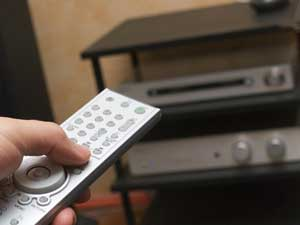

Once upon a time, when you turned off an appliance, it was off. Now many appliances (especially ones with remote controls, clocks or microprocessors) are designed with 'standby' features, which means they're ready for action at a moment's notice. It also means they're constantly drawing electricity 24 hours a day, seven days a week.
Every year, US consumers waste an estimated $4 billion on these phantom loads, which amounts to about 5 percent of the country's total electricity load, according to a study by Lawrence Berkeley National Laboratory.
If you're serious about conserving energy, find those phantoms, which include computers, TVs and other appliances with plug-in wall cubes, remote-controls or clock displays.
Use these four tips to zap phantom loads at your house and reduce global carbon emissions:
1. Use power strips (available at hardware and discount stores) that let you unplug several appliances by flipping a single switch. This is especially important for TVs, VCRs, microwaves and computers, which are the worst culprits.
2. Unplug appliances when you're not using them.
3. Plug the offending appliances into sockets controlled by a wall switch.
4. Use clocks powered by rechargeable batteries.
5. When buying new appliances, choose models with the lowest standby power consumption.
You'll save on energy bills and help save the planet when you banish these furtive phantoms from your home. For more information, visit Berkeley Lab's Standby Power Home Page.
|
 ISTOCKPHOTO.COM |
|
|